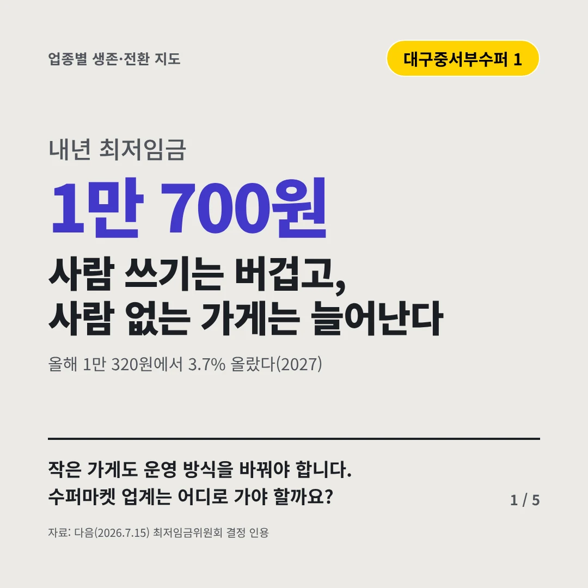
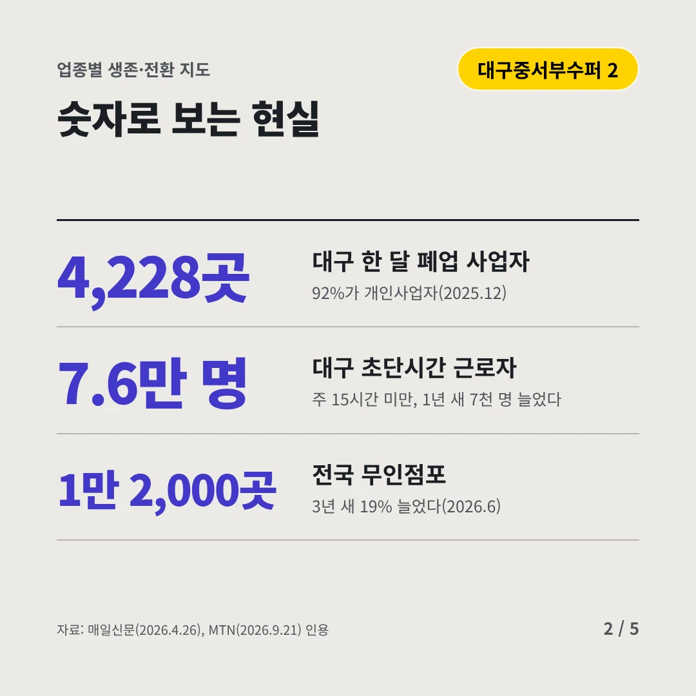
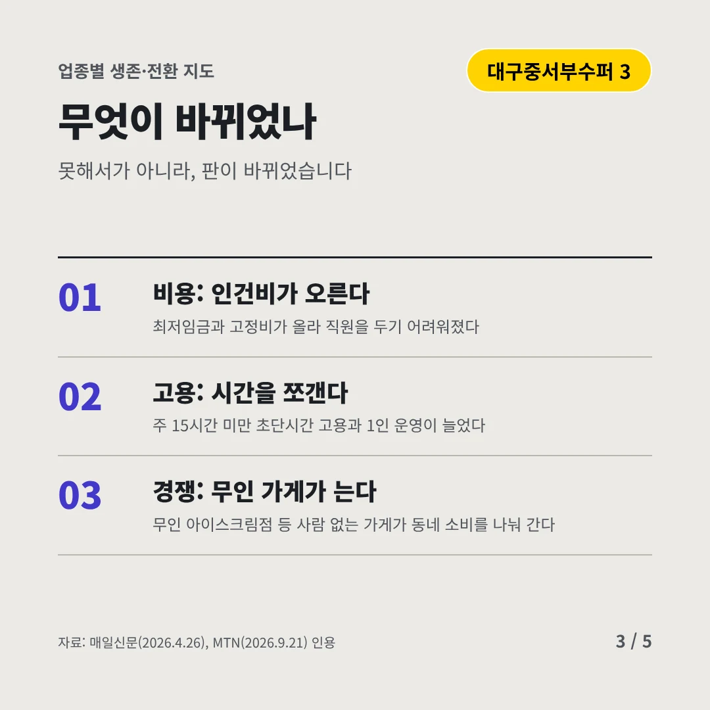
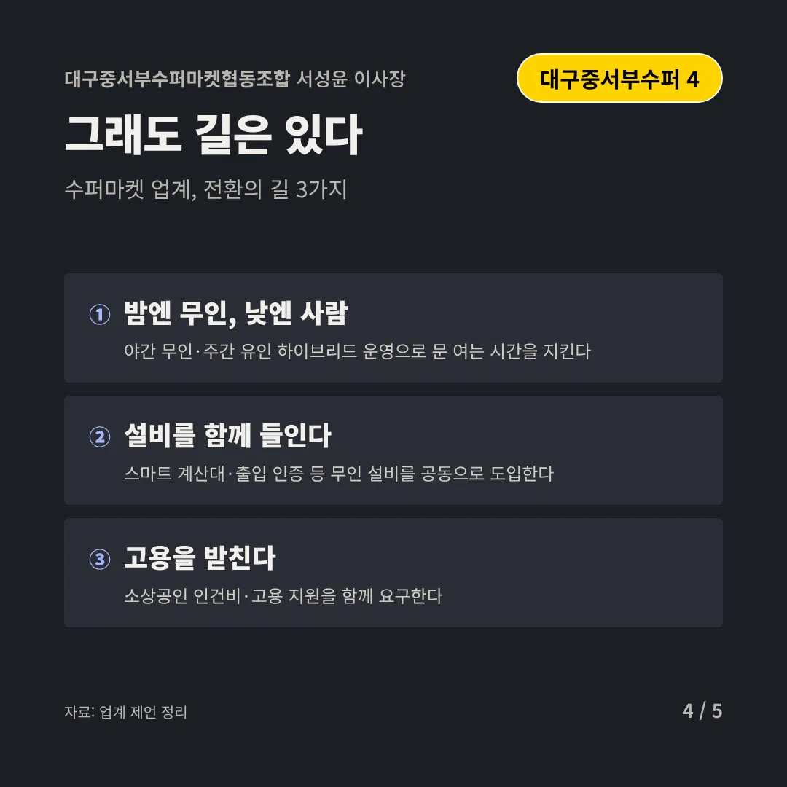
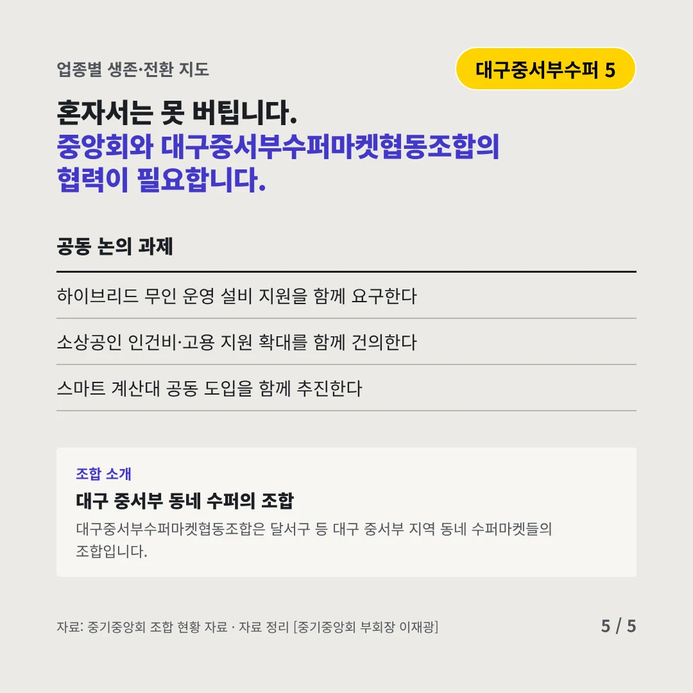
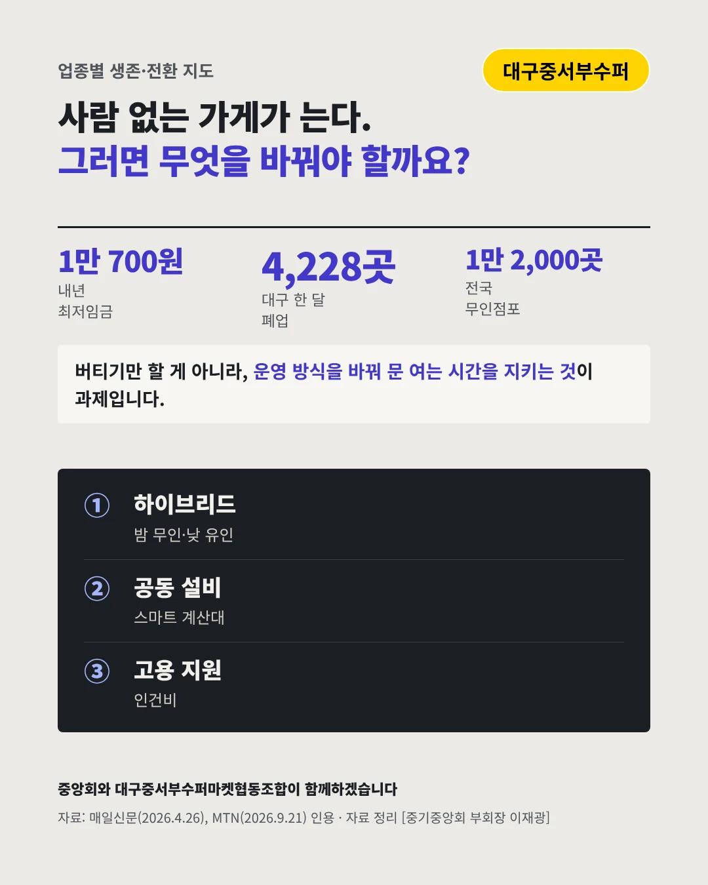

대구중서부수퍼마켓협동조합
사람 쓰기는 버겁고, 사람 없는 가게는 늘어난다
1만 700원 내년 최저임금






작은 가게도 운영 방식을 바꿔야 합니다. 수퍼마켓 업계는 어디로 가야 할까요?
숫자로 보는 현실
- 4,228곳대구 한 달 폐업 사업자92%가 개인사업자(2025.12)
- 7.6만 명대구 초단시간 근로자주 15시간 미만, 1년 새 7천 명 늘었다
- 1만 2,000곳전국 무인점포3년 새 19% 늘었다(2026.6)
무엇이 바뀌었나
- 비용: 인건비가 오른다최저임금과 고정비가 올라 직원을 두기 어려워졌다
- 고용: 시간을 쪼갠다주 15시간 미만 초단시간 고용과 1인 운영이 늘었다
- 경쟁: 무인 가게가 는다무인 아이스크림점 등 사람 없는 가게가 동네 소비를 나눠 간다
그래도 길은 있다
- 밤엔 무인, 낮엔 사람야간 무인·주간 유인 하이브리드 운영으로 문 여는 시간을 지킨다
- 설비를 함께 들인다스마트 계산대·출입 인증 등 무인 설비를 공동으로 도입한다
- 고용을 받친다소상공인 인건비·고용 지원을 함께 요구한다
한 장 요약

조합 소개
대구중서부수퍼마켓협동조합은 달서구 등 대구 중서부 지역 동네 수퍼마켓들의 조합입니다.
자료: 다음(2026.7.15), 매일신문(2026.4.26), MTN(2026.9.21)